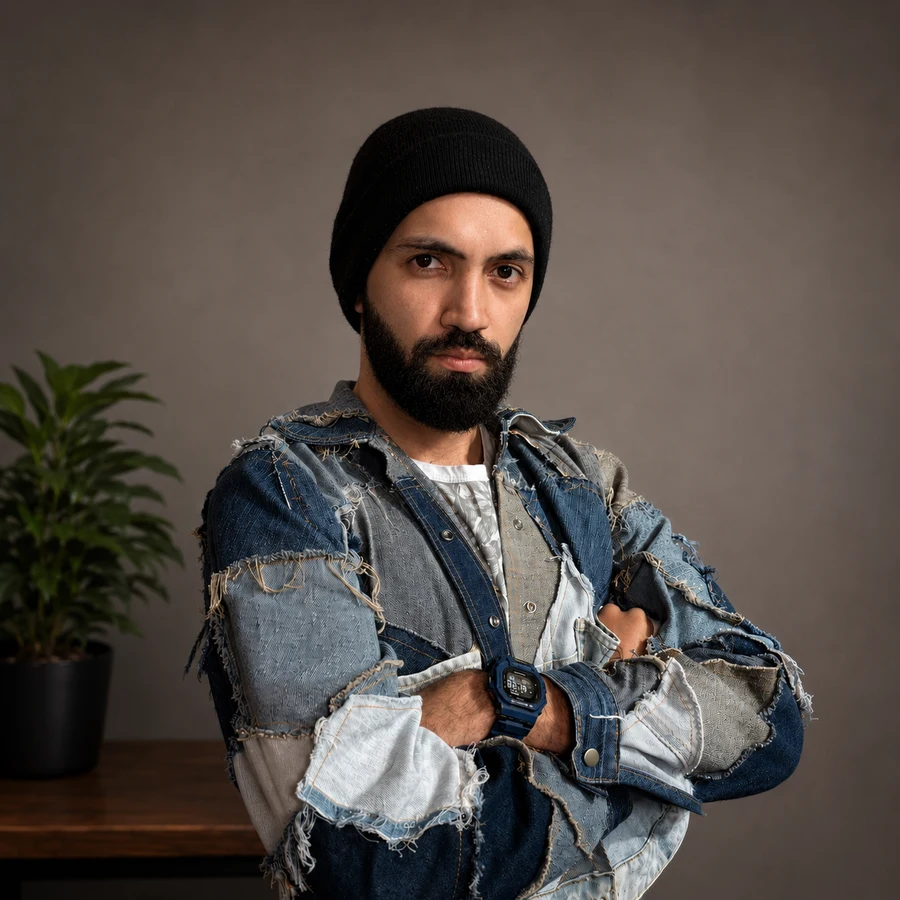

Início / Croqui de moda
Croqui de moda: o que é, para que serve e como encomendar o seu
Por Joel Pinheiro (@joelcoveero) · Atualizado em 4 de setembro de 2026
Croqui de moda é o desenho que mostra uma peça de roupa vestida em um corpo estilizado, com o objetivo de comunicar a ideia do look antes de ele existir. É a ponte entre o que está na cabeça de quem cria e o que a equipe, o cliente ou o comprador precisa enxergar para dizer sim.
Este guia reúne o que costuma ser perguntado antes de encomendar uma ilustração: para que o croqui serve na prática, no que ele difere do desenho técnico, o que informar no briefing, quanto custa e quanto tempo leva. Foi escrito a partir de projetos reais, de coleção de beachwear a look de palco para artista.
O que é um croqui de moda
O croqui é uma ilustração de intenção. Ele mostra a peça em um corpo alongado — a proporção clássica de nove cabeças, contra as sete e meia de um corpo real — porque essa distorção deixa a roupa mais legível: o caimento aparece, o comprimento fica claro e a silhueta se lê de longe.
Um bom croqui carrega quatro informações ao mesmo tempo:
- Silhueta — o formato geral da peça e como ela conversa com o corpo.
- Caimento — se o tecido é fluido, rígido, pesado, se cola ou se afasta do corpo.
- Detalhe construtivo — recortes, franzidos, fendas, decotes, acabamentos que definem a peça.
- Clima — a atitude, a pose e a paleta que dizem para que ocasião aquilo foi feito.
Quando falta a quarta, o desenho fica correto mas não convence ninguém. Quando falta a terceira, ele é bonito e impossível de produzir. O croqui profissional é o que segura as duas coisas juntas.
Croqui, desenho técnico e ilustração de moda: qual a diferença
Os três termos aparecem misturados no mercado, e a confusão custa dinheiro: gente que pede croqui quando precisava de ficha técnica, e gente que recebe desenho plano quando queria uma imagem para apresentar ao cliente.
| O quê | Como é | Para que serve |
|---|---|---|
| Croqui | Peça vestida em corpo estilizado, com pose, cor e clima | Apresentar e aprovar a ideia: cliente, comprador, artista, equipe |
| Desenho técnico | Peça reta, sem corpo, com costuras, medidas e acabamentos | Produzir: modelagem, corte, costura e ficha técnica |
| Ilustração de moda | Imagem autoral, com liberdade de estilo e composição | Capa, editorial, campanha, material gráfico e branding |
Regra prática: se a imagem vai para alguém decidir, você precisa de croqui. Se vai para alguém costurar, você precisa de desenho técnico. Se vai ser publicada como imagem, você precisa de ilustração. Projetos completos normalmente usam os três, em momentos diferentes.
Para que serve um croqui na prática
Fora da escola de moda, o croqui quase nunca é feito por prazer. Ele existe para resolver um problema concreto:
- Fechar coleção antes de gastar tecido. Ver trinta peças desenhadas lado a lado mostra buracos, repetições e desequilíbrio de cartela que ninguém percebe olhando peça por peça.
- Aprovar com o cliente sem retrabalho. Ajustar um decote no desenho custa uma mensagem. Ajustar depois da peça pronta custa a peça inteira.
- Alinhar com quem vai produzir. O croqui dá à modelista e à costureira a intenção do look, que a ficha técnica sozinha não transmite.
- Vender para comprador e lojista. Em showroom e apresentação de coleção, o croqui circula antes da peça física existir.
- Definir look de palco e de campanha. Artista, direção criativa e produção precisam ver o figurino antes de aprovar orçamento e cronograma.
- Registrar autoria e portfólio. O desenho documenta a criação, com data, mesmo quando a peça não chega a ser produzida.
Tem um projeto e quer saber quanto custaria?
Falar no WhatsAppQuem encomenda croqui de moda
Marcas de moda
Precisam de cartela de coleção fechada, com consistência entre as peças e prazo casado com o calendário de produção. Aqui o croqui é ferramenta de gestão: é o que permite cortar uma peça da coleção antes de ela custar dinheiro.
Estilistas independentes e autônomos
Costumam ter a ideia clara e pouco tempo para desenhar. Terceirizar a ilustração devolve horas para o que só eles podem fazer: modelagem, prova, atendimento e venda.
Artistas, cantores e produções de palco
Precisam ver o figurino antes de aprovar. Show, clipe e festival têm data fixa e cadeia longa — croqui aprovado é o que destrava a compra de tecido e o cronograma de costura.
Stylists e direção criativa
Usam o croqui para apresentar o conceito de um look ao artista ou à marca, e para alinhar a equipe inteira em uma imagem só.
Como encomendar um croqui: as três etapas
- Briefing. Conversa sobre a peça, o projeto e o momento em que ela vai aparecer. É aqui que se define escopo, prazo e formato de entrega — antes de qualquer traço.
- Direção. A referência vira conceito visual, e o conceito é ajustado com você até a ideia fechar. Corrigir rumo nesta etapa é barato; depois do traço final, não é.
- Ilustração final. Entrega em alta resolução, pronta para guiar a produção ou ser apresentada ao cliente, com uma rodada de ajustes prevista.
Escopo e prazo combinados por escrito antes de começar não são burocracia: são o que impede a conversa de "só mais uma pecinha" de virar o dobro do trabalho pelo mesmo valor.
O que informar no briefing
Quanto mais completo o briefing, menos rodada de ajuste e mais rápido você recebe. Vale mandar:
- Quantas peças e se elas formam um conjunto ou são independentes.
- Para que serve — coleção, palco, campanha, editorial, apresentação, portfólio.
- Referências visuais — fotos, prints, capturas de desfile, até rabisco de papel. Referência ruim é melhor que nenhuma.
- Tecido e caimento pretendidos — é o que mais muda o desenho. Cetim, tricoline e neoprene desenham de formas completamente diferentes.
- Cartela de cores, se já existir, ou a intenção de cor.
- Corpo e pose — se precisa de proporção específica, tipo de corpo ou pose de palco.
- Onde a imagem vai aparecer — define resolução, formato e proporção da entrega.
- Prazo real, com a data em que você precisa da imagem em mãos, não a data ideal.
Se você não tem nada disso pronto, tudo bem: uma descrição em texto e duas fotos de referência já são suficientes para começar e receber um orçamento. O resto se resolve na conversa de briefing.
Quanto custa um croqui de moda
Não existe tabela única, e desconfie de quem dá preço fechado sem perguntar nada. O valor de uma ilustração de moda é formado por quatro variáveis:
- Número de peças. Cartela de coleção tem custo por croqui menor que peça avulsa, porque o estudo de traço e proporção é feito uma vez só.
- Complexidade. Um vestido liso e um look com bordado, transparência, plissado e brilho não dão o mesmo trabalho — nem de longe.
- Prazo. Urgência reorganiza agenda e desloca outros projetos, e isso tem preço.
- Uso da imagem. Croqui para uso interno e croqui que vai virar peça de campanha nacional não valem o mesmo.
O caminho mais rápido para um número real é enviar número de peças, prazo e referências e receber um orçamento fechado antes de qualquer trabalho começar.
Qual o prazo
| Regime | Prazo típico | Quando faz sentido |
|---|---|---|
| Urgentíssimo | 24 a 48 horas | Apresentação, pitch ou aprovação com data marcada |
| Urgente | Até 1 semana | Peça avulsa ou conjunto pequeno com cronograma apertado |
| Padrão | 2 a 3 semanas | Cartela de coleção com rodada de ajustes tranquila |
| Sem pressa | A combinar | Quando dá para priorizar refino e acabamento |
Os prazos contam a partir do briefing fechado, não do primeiro contato. Referência que chega pela metade no meio do processo empurra a entrega.
Em que formato você recebe
A entrega padrão é arquivo em alta resolução, pronto para apresentação, portfólio ou produção. O formato exato é combinado conforme o uso: apresentação em tela, impressão, envio para modelista e publicação em rede social pedem tamanhos e proporções diferentes. Dizer no briefing onde a imagem vai aparecer evita ter que reexportar tudo depois.
Como escolher um ilustrador de moda
- Portfólio na sua categoria. Quem ilustra bem alfaiataria não necessariamente resolve beachwear, e vice-versa. Procure peças parecidas com as suas.
- O traço comunica tecido? Olhe se dá para adivinhar o material só pelo desenho. Se todo look parece feito do mesmo pano, o croqui é decorativo, não funcional.
- Processo com ajuste previsto. Quem não prevê rodada de ajustes está vendendo sorte.
- Escopo por escrito. Número de peças, prazo, formato e o que conta como ajuste, combinados antes de começar.
- Repertório de mercado. Quem já entregou para produção real sabe o que a modelista precisa ver — e isso aparece no desenho.
Perguntas frequentes
Qual a diferença entre croqui e desenho técnico?
O croqui mostra a peça vestida em um corpo estilizado e comunica a intenção do look: caimento, atitude, proporção e clima. O desenho técnico, também chamado de ficha técnica ou desenho plano, mostra a peça reta, sem corpo, com costuras, medidas e acabamentos, e serve para a modelista e a costureira produzirem. Um não substitui o outro: o croqui vende a ideia, o desenho técnico executa.
Preciso saber desenhar para encomendar um croqui?
Não. A maioria dos clientes chega com uma descrição em texto, fotos de referência, um print de rede social ou até um rabisco no papel. O trabalho do ilustrador é justamente traduzir isso em uma imagem que comunique a peça com clareza.
Quanto custa um croqui de moda?
Não existe tabela única no mercado. O preço varia conforme o número de peças, o nível de detalhamento, o prazo e o uso da imagem. Uma peça única com prazo confortável custa menos por croqui do que uma cartela urgente de coleção com muito detalhe. O caminho é enviar número de peças, prazo e referências e receber um orçamento fechado antes de começar.
Qual o prazo de entrega de um croqui de moda?
Depende do volume e da agenda. Uma peça única em regime de urgência pode sair em 24 a 48 horas. Uma cartela de coleção costuma levar de uma a três semanas, incluindo a rodada de ajustes. Prazos mais longos permitem mais refino de acabamento.
O croqui é feito à mão ou digital?
Pode ser qualquer um dos dois, e a escolha é sobre o uso. O digital facilita ajustes, variações de cor e entrega em alta resolução em qualquer tamanho, e é o mais comum em projetos comerciais. O traço à mão tem uma textura própria e costuma ser escolhido quando a ilustração em si faz parte do produto, como em capa, editorial ou material de campanha.
Posso usar o croqui em campanha, catálogo e redes sociais?
Sim, desde que o uso seja combinado no orçamento. Vale sempre dizer no briefing onde a imagem vai aparecer, porque isso muda a resolução necessária, o formato de entrega e, em alguns casos, o preço.
Como escolher um ilustrador de moda?
Veja se o portfólio tem peças parecidas com a sua categoria, se o traço comunica caimento e tecido e não só uma pose bonita, se o processo prevê rodada de ajustes, e se o escopo, prazo e formato de entrega são combinados por escrito antes de começar.
Quer encomendar o seu croqui?
Me conte o número de peças, o prazo e o que você tem de referência — eu retorno com um orçamento sob medida.
ou preencha o formulário de orçamento · veja o portfólio e as colaborações

Joel Pinheiro (@joelcoveero) é estilista e ilustrador de moda de Fortaleza, Ceará. Seu traço já assinou croquis para Ludmilla e KATSEYE, além de coleções de beachwear, underwear e alfaiataria. Atende remoto, para o Brasil e o exterior.